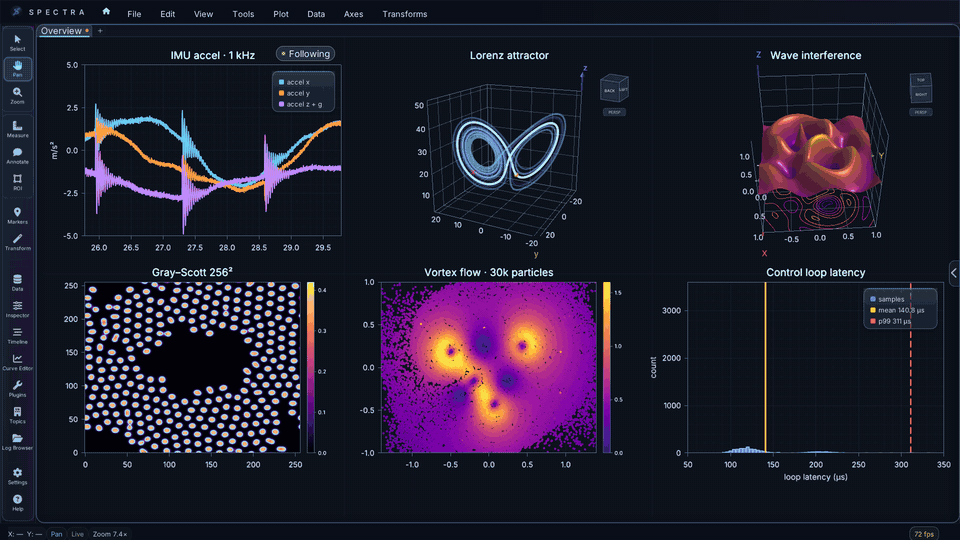
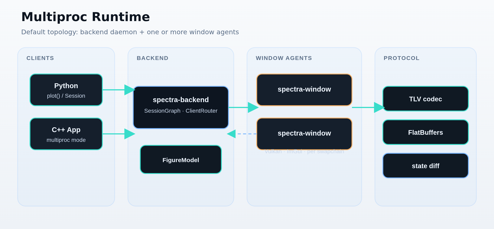
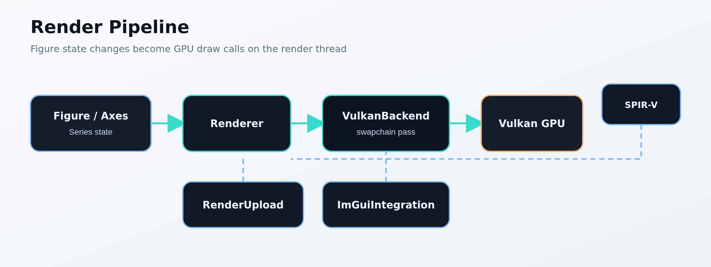
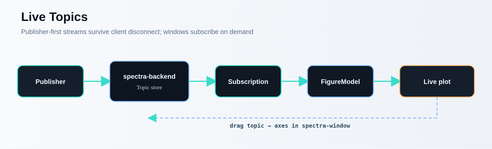

Rendering Engine
- Vulkan 1.2+ GPU backend
- 2D + 3D plotting pipelines
- Depth buffer + MSAA + high-quality text
Spectra 0.4.1 · open source, MIT
Spectra draws 2D and 3D plots on the GPU with Vulkan. Plot ten million points and still redraw in about a millisecond, stream live data at display rate, and explore it in a desktop app with linked axes, an inspector and drag-and-drop data files.

Spectra spans rendering, interaction, animation, desktop workflows, and Python and Rust clients.
spectra.pyplotsavefig()spectra-plot crate, no C++ toolchainTime to redraw one 1600x900 line plot, rendered offscreen and read back to the CPU (median of 30 frames, lower is better). Dense lines are reduced to what the screen can show without dropping a single spike, so the cost stays flat as data grows.
| Points | Spectra | matplotlib | pyqtgraph | Spectra, streaming |
|---|---|---|---|---|
| 10k | 1.3 ms | 13.2 ms | 7.2 ms | 1.4 ms |
| 100k | 1.2 ms | 23.5 ms | 10.7 ms | 2.4 ms |
| 1M | 1.2 ms | 46.3 ms | 36.6 ms | 10.6 ms |
| 10M | 1.2 ms | 230.2 ms | 219.7 ms | 84.5 ms |
NVIDIA RTX 5080, Ryzen 9 9950X3D, Windows 11, Python 3.12, Spectra 0.4.1. Full table and
method in the README; run
bench_compare.py
on your own hardware.
Visual maps for runtime topology, GPU pipeline, and live topics.

C++, Python and Rust clients, backend daemon, window agents.
Explore diagrams
From figure state to SPIR-V shaders on the GPU.
Read pipeline
Publisher-first streams into any open window.
Topics guidePrefer smaller pages? Use these focused guides.
Install, build, and run your first C++, Python and Rust plots.
Open guide →Complete capability matrix with APIs and key use cases.
View features →Recipe-style entry points mapped to repository examples.
Browse examples →Rendering pipeline, window model, and IPC runtime modes.
Read architecture →Core runtime, adapters, plugins, embed, and WebGPU.
View diagrams →GPU-accelerated ROS2 visualization — topic monitor, live plotting, bag tools, TF tree, node graph, and more.
View ROS2 docs →Standalone spectra-px4 for offline ULog browsing and live MAVLink telemetry.
Embed Spectra's Vulkan rendering inside a Qt6 application via QtRuntime.
Experimental WebGPU backend — same C++ code runs natively or in the browser.
View WebGPU docs →One-liner offscreen rendering for web services, batch reports, and notebooks.
Open guide →Write shared-library plugins for commands, transforms, overlays, data sources, and export formats.
Open guide →ROS-style named topics published into spectra-backend and plotted from any window.
"r--o")LineSeries3D, ScatterSeries3D, SurfaceSeries, MeshSeriesStart with one-liners, scale to full object control when needed.
plot(), scatter(), subplot()histogram(), bar(), box_plot(), violin()plot3(), scatter3(), surf(), mesh()figure(), tab())gcf(), gca(), cla())FigureIdspectra.plot(), spectra.scatter(), spectra.show()spectra.pyplot: subplots, errorbar, imshow, twinx, savefigplot3(), surf()spectra.live()find_package(spectra)#include <spectra/easy.hpp>
int main() {
std::vector<float> x = {0.f, 1.f, 2.f, 3.f};
std::vector<float> y = {0.f, 1.f, 0.5f, 1.5f};
spectra::plot(x, y, "c-o").label("example");
spectra::title("Spectra Feature Demo");
spectra::xlabel("X");
spectra::ylabel("Y");
spectra::show();
}Python (Linux and macOS; on Windows use WSL2):
pip install spectra-plotimport numpy as np
import spectra as sp
x = np.linspace(0, 10, 500)
sp.plot(x, np.sin(x), "r--", label="sin")
sp.title("Hello Spectra")
sp.show()Rust:
use spectra_plot::{linspace, Session};
let session = Session::new()?;
let ax = session.figure("Hello")?.subplot(1, 1, 1)?;
let x = linspace(0.0, 10.0, 500);
let y: Vec<f64> = x.iter().map(|v| v.sin()).collect();
ax.plot(&x, &y, "r--")?;
session.show()?;More in the Getting Started guide and the examples.